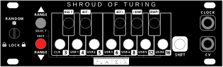

Welcome to the BETA page for the Nocturne Alchemy Platform – a flexible eurorack module series that redefines versatility and creativity. Each module within the Nocturne Alchemy Platform shares the same robust Arduino-based hardware, allowing you to effortlessly swap functionalities through our intuitive web firmware loader (See the video on this page) By purchasing one module, you gain access to the full range of available firmwares, including the Slight Of Hand, Arp Of Darkness, Shroud Of Turing, and the Seventh Summoner as well as others that are planned for future release!
This is a firmware uploader for Nocturne Alchemy Platform modules such as Slight Of Hand and Arp Of Darkness. It only works in Chrome on a Mac or PC. You will need a USB-A to USB Mini cable. If you don't have one laying around, you can find many inexpensive ones on Amazon
Just a quick word of warning: If you are here it's likely that you are a pro, and not afraid to beta test unproven firmware. Obviously, things could go sideways and weird things could happen like having your calibration go wonky, or a black hole suddenly appearing in your studio sucking in all you hold dear. I personally test firmware for some time before letting it slide to beta, and I try to take every precaution but you know... "at your own risk" and all that.
Read through all the steps below before you update the firmware.
This is BETA firmware for the arduino-based module Slight Of Hand.
This is a BETA firmware for the arduino-based Arp Of Darkness.
This is BETA firmware for the arduino-based Seventh Summoner.

This is BETA firmware for the arduino-based Shroud Of Turing.
Very special thanks to: https://github.com/dbuezas/arduino-web-uploader for making the updater code.